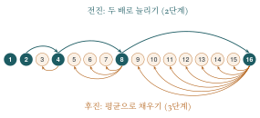

STEP II 1993, 문제 8
계속 읽기 전에 문제를 먼저 읽어 보자. 문제는 STEP Support Programme의 문제 데이터베이스에 있다: step.maths.org/questions/93-s2-q8
도입
산술평균–기하평균 부등식(arithmetic mean–geometric mean inequality, AM–GM)은 아마도 수학에서 가장 쓸모 있는 부등식일 것이다. 이 부등식에 따르면 양수들의 보통 평균은 언제나 “곱셈의 평균”보다 크거나 같고, 등호는 모든 수가 같을 때에만 성립한다. 이 부등식은 미적분 없이 최적화(optimisation) 문제를 풀고, 다른 부등식을 증명하며, 해석학(analysis)의 모든 분야에 등장한다.
이 문제는 1821년 오귀스탱루이 코시(Augustin-Louis Cauchy)가 고안한, 기묘하고도 아름다운 귀납법(induction)으로 이 부등식을 증명한다. \(n\)에서 \(n + 1\)로 나아가는 대신 \(2\)에서 \(4\)로, \(8\)로, \(16\)으로 건너뛰며 \(2\)의 거듭제곱만을 다룬 다음, 다시 아래로 내려와 그 사이의 수들을 채운다. 이 증명은 “귀납법”이 교과서에 나오는 형태보다 훨씬 유연한 개념임을 일깨워 준다.
시작하기 전에
온라인 자료실에 있는 이 시험지에는 오타가 있다. “\(b_1 = a_2\)”라고 되어 있는데, 당연히 \(b_1 = a_1\)이어야 한다. 핵심은 \(b\)들이 \(a\)들에 그 평균의 복사본을 덧붙여 채운 것이라는 점이다.
\(n\)개에서 \(n + 1\)개로 가는 것보다 \(2^m\)개의 수에서 \(2^{m+1}\)개의 수로 가는 것이 왜 더 쉬울까?
\(2^{m+1}\)개의 수는 자연스럽게 \(2^m\)개씩 두 묶음으로 나뉘므로, 각 절반에 귀납 가정을 적용한 뒤 두 수의 경우를 이용해 두 절반을 합칠 수 있기 때문이다. \(n\)에서 \(n + 1\)로 가는 경우에는 이처럼 대칭적으로 다룰 수 있는 구조가 없다.
차근차근 풀기
단계 1 두 수의 경우
\(\left( \frac{a_1 + a_2}{2} \right)^2 - a_1 a_2 = \frac{a_1^2 + 2a_1a_2 + a_2^2 - 4a_1a_2}{4} = \frac{(a_1 - a_2)^2}{4} \geq 0.\)■
단계 2 두 배로 늘리기
\(m = 1\)인 경우는 1단계이다. \(2^m\)개의 수에 대하여 \((*)\)이 성립한다고 가정하고, \(2^{m+1}\)개의 양수를 택하자.
\(2^{m+1}\)개의 수를 앞쪽 절반과 뒤쪽 절반으로 나누고, 두 절반의 산술평균을 각각 \(P\)와 \(Q\)라 하자. 귀납 가정은 각 절반에 대하여 무엇을 말해 주는가?
각 절반에 \((*)\)을 적용하면 \[a_1 \cdots a_{2^m} \leq P^{2^m} \qquad\text{그리고}\qquad a_{2^m + 1} \cdots a_{2^{m+1}} \leq Q^{2^m}.\] 모든 수가 양수이므로 두 식을 곱하면, \(2^{m+1}\)개의 수 전체의 곱은 \((PQ)^{2^m}\) 이하이다. 이제 두 수의 경우에 의해 \(PQ \leq \left( \frac{P + Q}{2} \right)^2\)이고, \(\frac{P + Q}{2}\)는 정확히 \(2^{m+1}\)개의 수 전체의 평균이다. 따라서 \[a_1 \cdots a_{2^{m+1}} \leq (PQ)^{2^m} \leq \left( \frac{P + Q}{2} \right)^{2^{m+1}} = \left( \frac{a_1 + \cdots + a_{2^{m+1}}}{2^{m+1}} \right)^{2^{m+1}},\] 이고, 이것이 바로 \(m + 1\)에 대한 \((*)\)이다. 수학적 귀납법에 의해, 항의 개수가 \(2\)의 거듭제곱일 때마다 AM–GM이 성립한다.■
단계 3 빈틈 채우기
이제 임의의 \(n\)을 택하고, \(2^m > n\)인 \(m\)을 고르자. 목록 \(a_1, \ldots, a_n\)에 그 자신의 평균 \(A\)의 복사본 \(2^m - n\)개를 덧붙여 채운다.
채워 넣은 목록 \(b_1, \ldots, b_{2^m}\)의 평균은 무엇인가?
합은 \((a_1 + \cdots + a_n) + (2^m - n)A = nA + (2^m - n)A = 2^m A\)이므로 평균은 \(A\) 그 자체이다. 평균의 복사본을 덧붙여도 평균은 변하지 않는다. 따라서 \(b\)들에 \((*)\)을 적용하면 \[a_1 \cdots a_n \cdot A^{2^m - n} \leq A^{2^m}.\]
증명을 마무리하라.
양변을 \(A^{2^m - n}\)(양수이다)으로 나누면 \(a_1 \cdots a_n \leq A^n\)이다. 양변에 \(n\)제곱근을 취하면 \[(a_1 \cdots a_n)^{1/n} \leq A = \frac{a_1 + \cdots + a_n}{n}. \qed\]
돌아보기
다른 경로를 따르는 귀납법. 2단계는 \(m\)에 대한 귀납법으로, \(n = 2, 4, 8, \ldots\)을 다룬다. 3단계는 \(2\)의 임의의 거듭제곱에서 그보다 작은 임의의 \(n\)으로 내려가는 방법이다(그림 3.2.1).
평균으로 채우기. 평균을 바꾸지 않고 목록을 늘리는 이 기법은 기억해 둘 만하다. 임의의 \(n\)에 관한 문제를 다루기 편한 \(n\)에 관한 문제로 바꾸는 방법이다.
등호는 언제 성립하는가? 증명을 거슬러 올라가 보면, 등호가 성립하려면 두 수의 경우를 사용한 모든 곳에서 등호가 성립해야 하고, 이는 모든 수가 같을 때에만 일어난다.

숨은 수학
코시는 이 증명을 Cours d’analyse(해석학 강의, 1821)에 발표했다. 이 책은 2장에서 다룬 엄밀한 해석학의 출발점이 된 책이다. 이 기법은 오늘날 전진–후진 귀납법(forward–backward induction)이라 불린다. 무한히 많은 경우의 수열(여기서는 \(2\)의 거듭제곱)에 대하여 명제를 증명한 다음, \(n\)인 경우가 \(n - 1\)인 경우를 함의함을 보이는 것이다. 이 둘을 합치면 모든 \(n\)에 도달한다. 우리의 3단계는 \(2^m\)에서 \(n\)으로 곧바로 내려가지만, 한 단계씩 내려갈 수도 있다. \(n - 1\)개의 수에 그 평균의 복사본 하나를 덧붙이면 \(n\)인 경우가 \(n - 1\)인 경우를 함의함을 알 수 있다.
하나의 부등식, 여러 가지 증명
AM–GM에는 수십 가지 증명이 있으며, 이들을 비교해 보는 것은 수학의 다양한 스타일을 엿보는 좋은 방법이다.
볼록성을 이용한 증명. 로그함수는 오목(concave)하므로, 로그값들의 평균은 평균의 로그값 이하이다. 양변에 지수함수를 취하면 바로 AM–GM이 되며, 이것이 3.3 절의 주제인 볼록성(convexity)이다.
조지 폴리아(George Pólya)의 증명. \(e^{x - 1} \geq x\)를 이용한다(\(x = 1\)에서 \(e^{x-1}\)에 그은 접선(tangent line)은 곡선 아래에 놓인다). 평균을 \(A\)라 하고, 각 \(a_i/A\)에 이 부등식을 적용하여 곱하면 \(\prod \frac{a_i}{A} \leq e^{\sum (a_i/A - 1)} = e^0 = 1\)이다. 폴리아는 이 증명이 꿈속에서 떠올랐다고 말했다.
고르게 만들기를 이용한 증명. 두 수가 서로 다르면 둘 다 그 평균으로 바꾼다. 산술평균은 변하지 않고, 두 수의 경우에 의해 곱은 커진다. 이 과정을 반복하면 모든 수가 평균 쪽으로 밀려간다.
미적분 없는 최적화
AM–GM을 쓰면 많은 최적화 문제가 한 줄로 풀린다. 겉넓이가 주어진 상자 가운데 부피가 가장 큰 것은 무엇인가? 둘레가 주어진 직사각형 가운데 넓이가 가장 큰 것은 무엇인가? (두 수의 경우에 의해 정사각형이다: \(xy \leq \bigl(\frac{x+y}{2}\bigr)^2\)이고, 등호는 \(x = y\)일 때 성립한다.) 등호 조건은 최적값이 어디에 있는지 알려 주고, 부등식은 그것이 단지 정상점(stationary point)이 아니라 정말로 최적값임을 알려 준다. 3.1 절의 경고와 비교해 보라.
사고 기술
귀납법이 반드시 \(1, 2, 3, \ldots\) 순서로 진행될 필요는 없다. 모든 경우에 도달하는 경로라면 어떤 경로를 따라도 귀납할 수 있다. 두 배로 늘려 가거나, 강한 귀납법(strong induction)을 쓰거나, 부분수열(subsequence)을 따라 전진한 뒤 후진하여 빈틈을 채울 수도 있다.
\(n\)에서 \(n+1\)로 가는 뻔한 단계가 어렵다면, 어떤 단계가 쉬울지, 그리고 그 단계를 이용해 모든 경우에 도달할 수 있는지 물어보라.
더 도전하기
한 걸음 뒤로. 평균의 복사본 하나를 덧붙이는 방법으로, \(n\)개의 수에 대하여 AM–GM이 성립하면 \(n - 1\)개의 수에 대해서도 성립함을 직접 보여라.
증가하는 수열. \(n + 1\)개의 수 \(1 + \frac1n, \ldots, 1 + \frac1n, 1\)(\(1 + \frac1n\)이 \(n\)개)에 AM–GM을 적용하여 \(\left(1 + \frac1n\right)^n < \left(1 + \frac{1}{n+1}\right)^{n+1}\)임을 보여라.
최고의 상자. 닫힌 직육면체 상자의 겉넓이가 \(S\)이다. 서로 다른 세 면의 넓이에 AM–GM을 적용하여 부피가 \((S/6)^{3/2}\) 이하이고, 등호는 정육면체일 때 성립함을 보여라.
조화평균. 수 \(1/a_i\)에 AM–GM을 적용하여, 조화평균(harmonic mean) \(\dfrac{n}{1/a_1 + \cdots + 1/a_n}\)이 기하평균 이하임을 보여라.
더 읽을거리
J. Michael Steele, The Cauchy–Schwarz Master Class (Cambridge University Press). 바로 이 수준에서 출발하는, 문제 중심으로 구성된 훌륭한 부등식 책이다. 2장이 AM–GM에 관한 내용이다.
Hardy, Littlewood & Pólya, Inequalities (Cambridge University Press). 20세기의 위대한 해석학자 세 사람, 하디(Hardy), 리틀우드(Littlewood), 폴리아가 쓴 고전적인 참고서이다.
Arthur Engel, Problem-Solving Strategies (Springer). 7장에는 올림피아드의 부등식 문제가 대량으로 모여 있다.